Знак зоны действия 38 указывает на действие изображенного на нем другого дорожного знака в пределах всей зоны. Если в данной зоне установлены дорожные знаки, противоречащие изображенному на дорожном знаке 38, то на соответствующих участках дороги следует руководствоваться требованиями первых знаков.
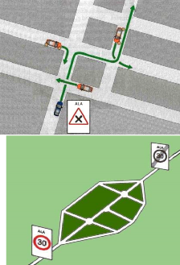
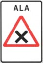
Знак устанавливается для обозначения зоны, в которой имеются взаимные пересечения дорог с твердым покрытием, гравийных и грунтовых дорог, и превращает их в перекрестки равнозначных дорог.
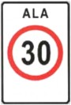
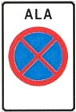
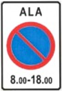
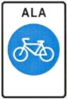
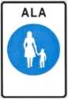
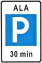
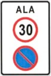
Знак зоны действия с изображением двух дорожных знаков.
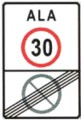
Обозначает начало одной и конец другой зоны действия. Могут использоваться также знаки зоны действия с изображением иных дорожных знаков. Знаки зоны действия 39 отменяют порядок движения, установленный знаками 38.
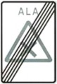
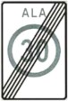
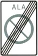
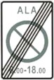
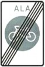
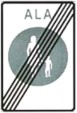
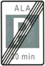
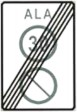